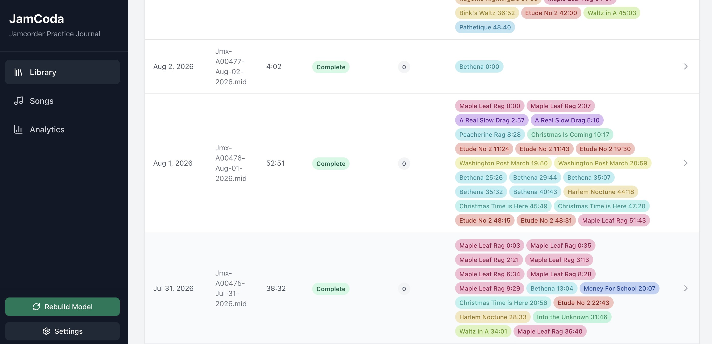
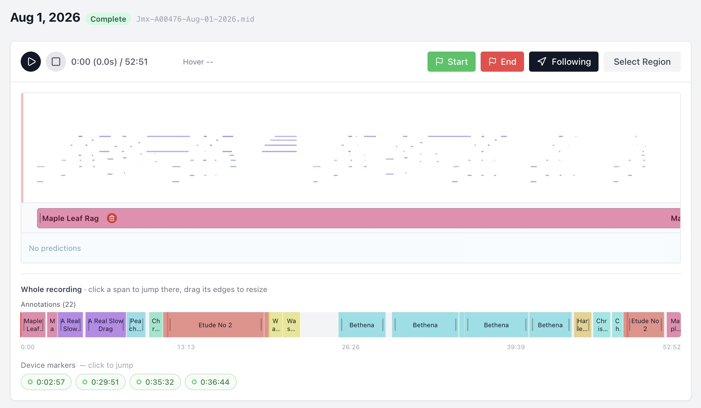
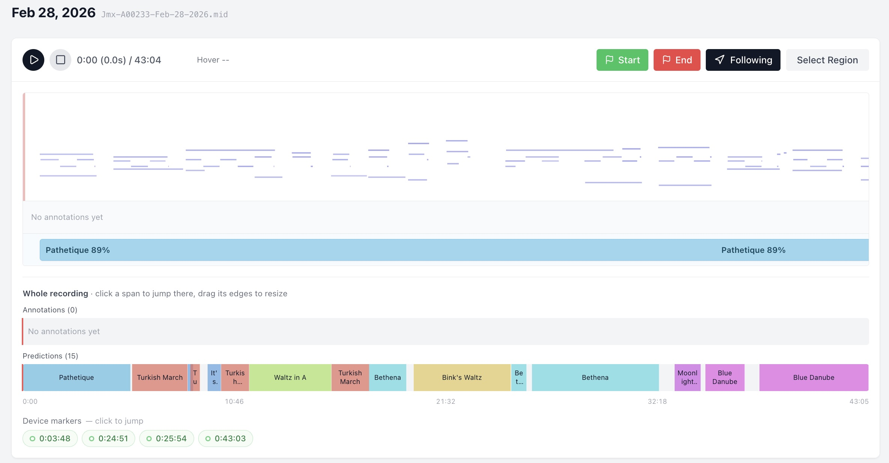
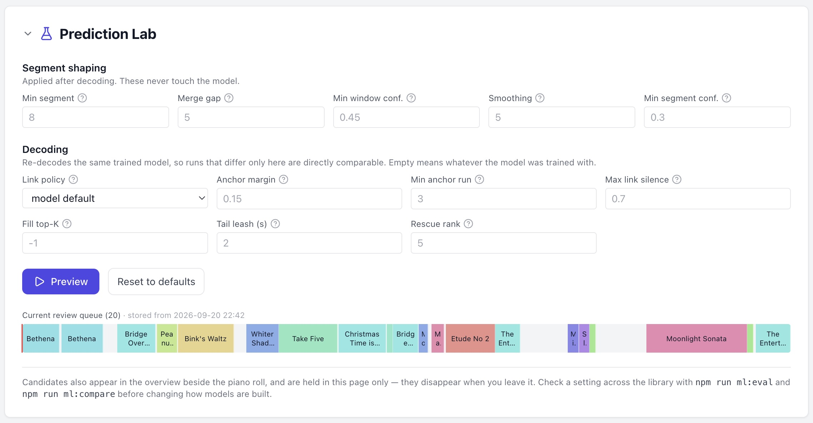
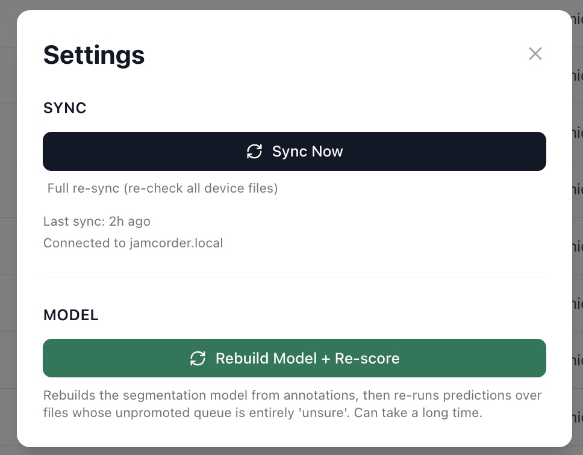
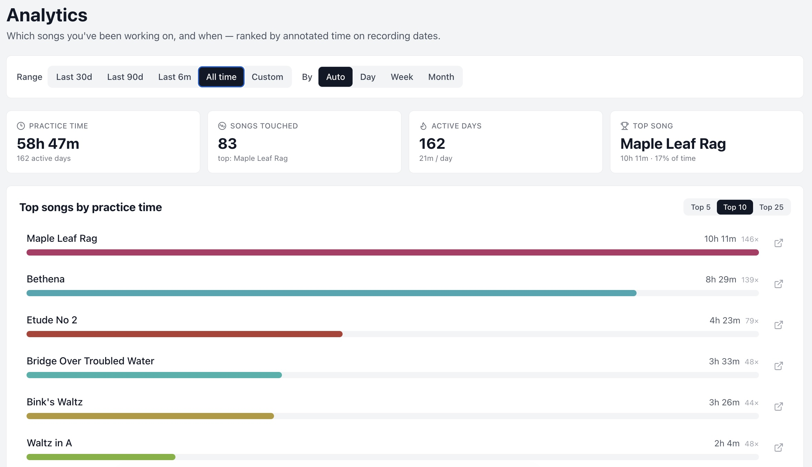
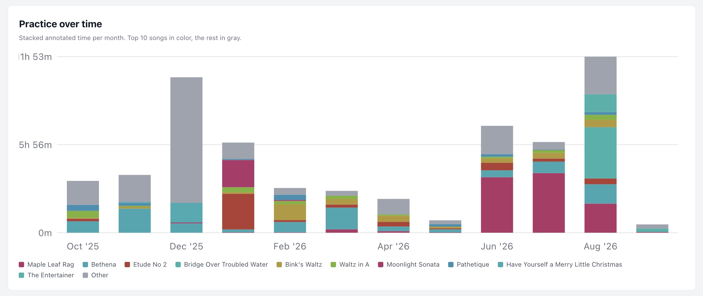
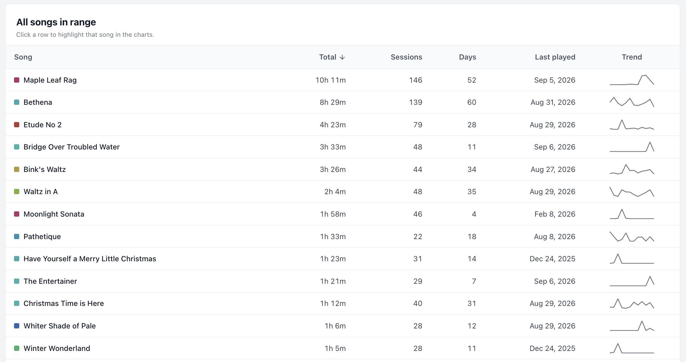

01
Label
You mark where a take starts and ends, and give it the name of the piece.
Overview
A Jamcorder saves a practice session as one long recording: two run-throughs of the piece you are learning, four attempts at the bar that keeps going wrong, and a good deal of playing for its own sake. JamCoda turns that into a list of takes — which song, where it starts, how long it lasted — and then into a picture of what you have been working on.
It runs on your own computer. Recordings come off the device over your network into a folder and a small database that belong to you. There is no account, and nothing is uploaded anywhere. The screenshots below are from a real library.
New sessions come off the Jamcorder into your library. After that, three things go round.
01
You mark where a take starts and ends, and give it the name of the piece.
02
JamCoda looks through your other recordings for the pieces it has learned from you, and proposes where each take begins and ends.
03
You keep, adjust or reject each suggestion. Everything you keep becomes a label like any other.
↻ And back to labeling. Each round leaves JamCoda knowing your repertoire a little better, so the next one arrives with more of it already named — and a piece it has never been shown stays unnamed until you label a take of it yourself.
The Library is where you land, and where you can see how far through your recordings you are.
Each row is one session: the date the Jamcorder recorded it, the filename it gave it, and how long it runs. The middle columns say where you stand with it. A green Complete badge means you have decided everything worth naming in that recording has been named; before that, a bar shows how much of the session is covered. Beside it is the number of suggestions still waiting for you.
On the right, the session itself, one chip per take: the name of the piece and the minute it begins. Click a chip and the recording opens at that moment.
A row is readable on its own. The August 1 session runs 52:51 and holds twenty-two takes — a couple of passes at Maple Leaf Rag to warm up, a stretch on Etude No 2, five passes at Bethena in the middle, Maple Leaf Rag again at the end. Directly above it, August 2 is four minutes long and contains a single take of Bethena.

Where the labeling happens, and where you listen back.
Opening a session shows what was played. Notes run left to right in time and bottom to top in pitch, with the playhead down the left. Press play and you hear it back on a piano, whatever sound the original was recorded with.
Naming a take is the main work. Play until you hear a piece
begin, press Start, let it run to the end of the take,
press End, then give it a name — or drag across the roll
and nudge the edges afterward. P plays,
S and E set the two edges.
Following keeps the view moving with the music, and the
colored bar under the roll is the take you are currently inside.
Under that, Whole recording is the entire 52:51 at a glance — all twenty-two takes, colored by piece. Click a block to jump to it, drag an edge to change where it starts or ends. The device markers below are the Jamcorder’s own: points you bookmarked while playing, and the long silences it noticed. They are a good way to find the seams between takes.
The empty lane reading No predictions is empty on purpose. This session has been marked complete, so JamCoda has cleared its suggestions and won’t make new ones for it. Marking a session complete is worth doing for another reason too: it tells JamCoda that the unlabeled stretches in that file really were you playing around, rather than takes nobody got around to naming — which is how it learns when to stay quiet.

The same view, on a recording with nothing labeled in it yet.
Here the top lane says No annotations yet, and the lane below it holds fifteen suggestions: Pathetique, Turkish March, Waltz in A, Bethena, Bink’s Waltz, Blue Danube — forty-three minutes of practice, proposed as takes.
They come from a model built out of your own labeling. It knows the pieces you have named before and nothing else, so it will recognize Bethena in a recording it has never seen, and stay quiet about something you sight-read for the first time that day.
Each suggestion carries a percentage. That number is not the model rating its own cleverness; it is an estimate, based on which suggestions you have accepted in the past, of how likely you are to accept this one. Long, steady spans read high; short scraps read low.

Clicking a suggestion opens it for review. Listen to it, then keep it as it stands, fix the name or the edges first, or throw it out. Anything you keep becomes an ordinary label, no different from one you made by hand — and part of what the next rebuild learns from.
How does it recognize anything? How JamCoda finds the songs is the illustrated version: how a recording is cut into short windows, what each one is compared against, and how the parts it recognizes are joined back into takes. It is the technical companion to this page.
Prediction Lab, for the cases you can see with your own eyes.
Most of the time there is nothing to adjust. Now and then a session comes back visibly off — one take arriving in three pieces, or a take swallowing the noodling that followed it — and this panel, folded away at the bottom of the same page, lets you try something else before committing to it.
The first row tidies up the result after the model has had its say: the shortest span allowed to count as a piece, how close two fragments of the same piece must be before they are treated as one take, how sure it has to be to keep a span at all. The second group changes how the parts it recognized are joined together; it re-reads the same model rather than rebuilding anything, so two runs that differ only here are directly comparable.
Each box shows the value currently in use, and typing over one applies only to the next preview. Preview draws the result along the bottom, next to what is stored, and forgets it the moment you leave the page. Nothing here retrains the model, and nothing replaces your suggestions until you ask for a real run.

Two buttons, both deliberately manual.
Sync Now fetches whatever the Jamcorder has recorded since last time. Sessions already on your machine are skipped, and the empty files the device sometimes leaves behind — opened and closed without a note in them — are ignored rather than filling up your library. A full re-sync re-checks everything, for when a recording needs collecting again.
Rebuild Model + Re-score takes every label you have made, including all the suggestions you accepted, builds a fresh model from them, and runs it over the sessions whose suggestions you have not acted on yet. It can take a while, so it happens when you say so and not before. The button in the sidebar picks up a badge when your labeling has moved on since the model was built, or when a piece has appeared that it has never seen.

The slow part is at the beginning, and you only do it once.
The first few sessions are all hand work. There is nothing to learn from yet, so every take gets named by you — and marking those early recordings complete is what teaches JamCoda the difference between a piece and ten minutes of playing around.
After that it compounds. Every take you name, and every suggestion you accept, is another example of how you play that piece, so the next rebuild knows your repertoire a little better. A session that would once have arrived blank arrives mostly named, and the work changes shape: less labeling, more listening and confirming. A new piece needs only a handful of named takes before it starts turning up on its own; something you have been playing for months is usually found without you doing anything at all.
The practical version: an hour spent labeling this month is not an hour you spend again next month. It is what makes a library this size — 83 pieces across 162 days of recordings — something you can keep on top of.
The reason for all the labeling: a straight answer to “what have I actually been playing?”
Pick a stretch of time — the last month, the last six, all of it — and Analytics adds up the takes inside it. Four numbers at the top: total practice time, how many different pieces you touched, how many days you sat down and the average per day, and the piece that took the most time along with its share of the total.
Under them, the pieces ranked by time, with the number of separate takes beside each: 146 run-throughs of Maple Leaf Rag over ten hours, 139 of Bethena over eight and a half. Clicking a bar picks that piece out of the chart below it; the small icon at the end of the bar opens it in the Songs view, where you can play its takes from different sessions one after another.

Only labeled time is counted. Improvising, warming up and anything still unnamed stays out of these totals — which is the practical reason to keep up with the suggestions.
The same time, broken up by month and stacked so each band is one piece. The ten pieces with the most time get a color; everything else is gray. That makes the shape of a bar informative on its own. December 2025 is tall and almost entirely gray: a month spread thinly across many different pieces. August 2026 is taller still and mostly color — the same few pieces, over and over.

Then the whole range as a table: every piece, the time it took, how many takes that was, how many separate days it turned up on, when you last played it, and a small line showing how it was spread across the range. Sort by any column, and click a row to pick that piece out of the charts above.
Two rows can say quite different things. Maple Leaf Rag — ten hours, 146 takes, across 52 separate days — is something being kept up. Moonlight Sonata — nearly two hours and 46 takes, but on four days, and nothing since February — is a piece learned in a burst and then set down.

An illustrated walkthrough of what happens between a recording and the suggestions: how it listens, what it remembers, and where it still gets things wrong.
The source, and the few commands that install it, point it at your Jamcorder and start it running locally.
Commands and settings for training, predicting and measuring the model, for anyone who wants to take it further.
{kind=link}
{kind=link}
{kind=link}
{kind=link}
{kind=link}
{kind=link}
{kind=link}
{kind=link}